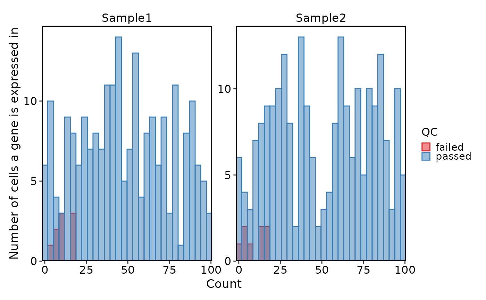
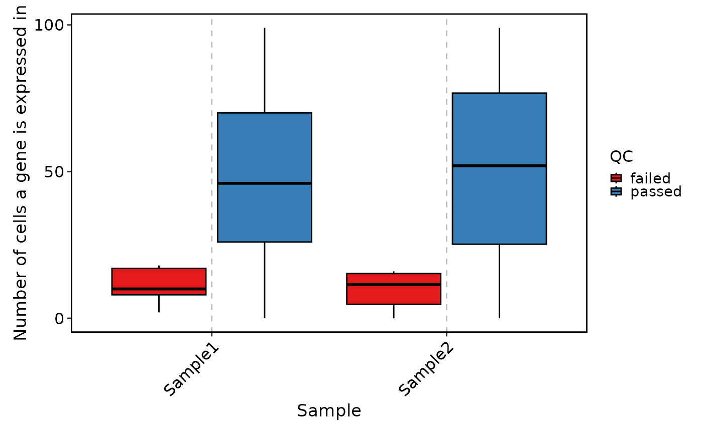
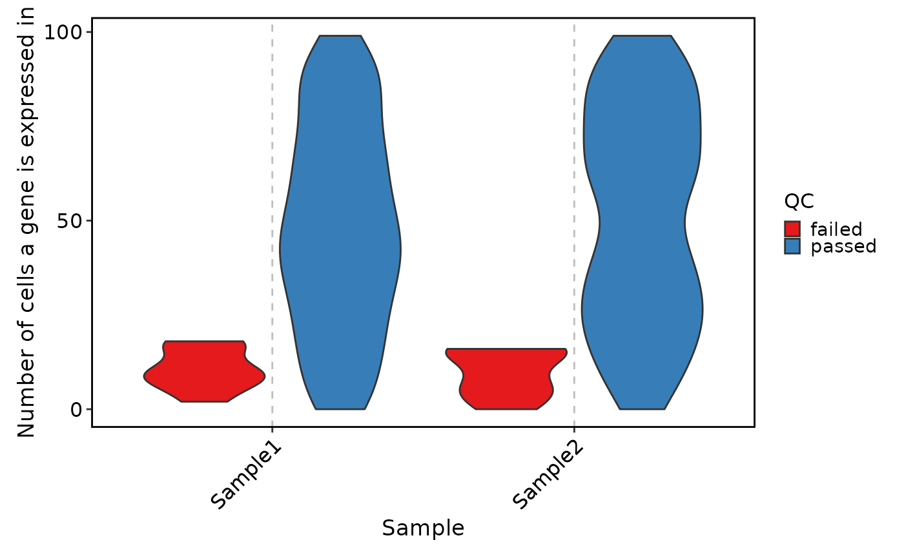
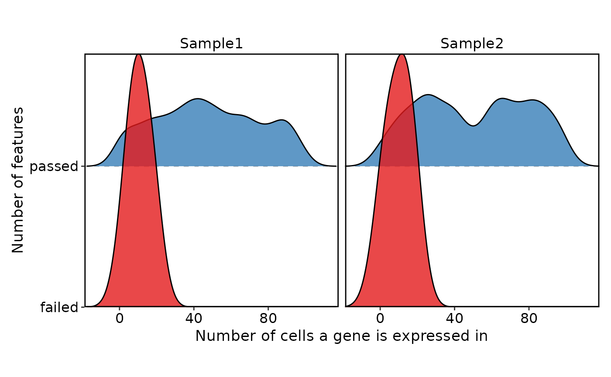

Visualize gene QC metrics of Seurat object
VizSeuratGeneQC.RdVisualize gene QC metrics of Seurat object
Usage
VizSeuratGeneQC(
object,
plot_type = c("histogram", "box", "violin", "ridge", "table"),
palette = "Set1",
ylab = "Number of cells a gene is expressed in",
...
)Arguments
- object
A Seurat object with gene QC metrics
- plot_type
Type of plot to generate One of 'histogram', 'box', 'violin', 'ridge' and 'table' If 'plot_type' is 'table', it will return a data frame with number of genes before and after filtering
- palette
Color palette to use
- ylab
Y-axis label When plot_type is ridge, it will be used as x-axis label
- ...
Additional arguments to pass to the plot function
plotthis::BarPlot()
Examples
# \donttest{
set.seed(8525)
sobj <- SeuratObject::pbmc_small
sobj@misc$gene_qc <- data.frame(
Sample = rep(c("Sample1", "Sample2"), each = nrow(sobj)),
Feature = rep(rownames(sobj), 2),
Count = as.integer(runif(nrow(sobj) * 2, 0, 100))
)
sobj@misc$gene_qc$QC <- (
sobj@misc$gene_qc$Count >= 20 |
sample(c(TRUE, FALSE), nrow(sobj) * 2, prob = c(0.8, 0.2), replace = TRUE)
)
# Visualize gene QC metrics
VizSeuratGeneQC(sobj)
#> Using `bins = 30`. Pick better value with `binwidth`.

VizSeuratGeneQC(sobj, plot_type = "box")

VizSeuratGeneQC(sobj, plot_type = "violin")

VizSeuratGeneQC(sobj, plot_type = "ridge")
#> Picking joint bandwidth of 5.79
#> Picking joint bandwidth of 6.29
#> Picking joint bandwidth of 5.79
#> Picking joint bandwidth of 6.29

VizSeuratGeneQC(sobj, plot_type = "table")
#> # A tibble: 3 × 4
#> Sample failed passed total
#> <fct> <int> <int> <int>
#> 1 Sample1 9 221 230
#> 2 Sample2 8 222 230
#> 3 Final_Features 17 213 230
# }